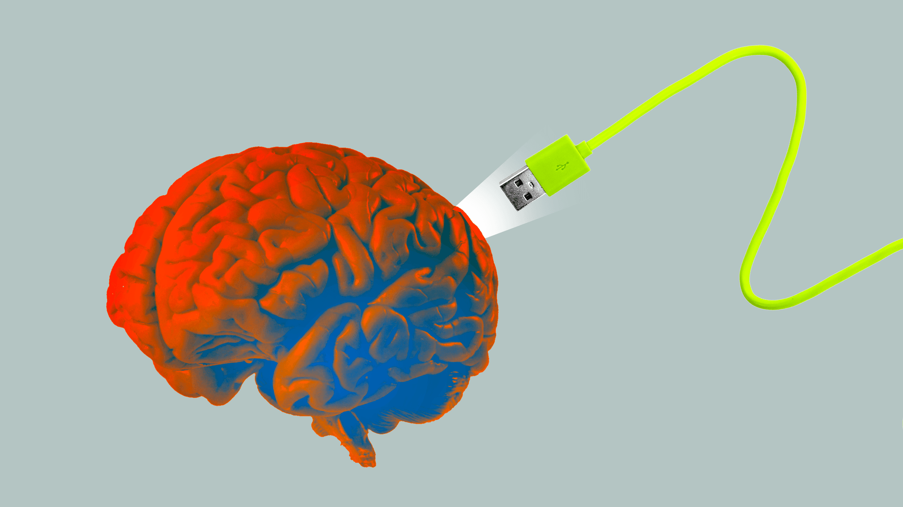
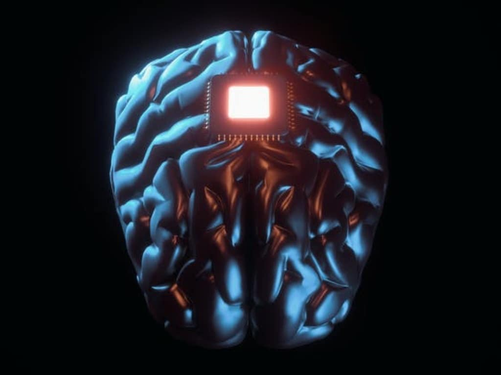

>
people's perception on neuralink


Gary D. Brown
Operations Manager at BLang Concepts and Design
I like Elon's strategy so far. Start from the outer part of the brain and
then go farther as results dictate. Basically the same way as he treats Starship. He has shownbr
by his trials on pigs that Neurolink can be applied, used and after monthsbr of monitoring be taken out with no negative effects. This is important so that we can do upgrades easily. The initial challenge is of a medical nature with patients with spinal cord damage. This damage which now results in being paralyzed will be corrected by installing brain link to a receiver relay via a Bluetooth connection bypassing the break. The brain now regains 100% control to restore motor function. The break then doesn't need to be repaired. The link inserted into the brain runs on a 12-16 hour battery to be recharged nightly. Operating procedures are mostly done by a robot and soon it will be done 100% that way in less than an hour. Outpatient that same day the patient Walks home. 1024 strands of neurofibers at the Neurolink port at the top of the skull is flush and hair covers over it. The receiver is set at point internally after the break. After this then they plan to tackle who is blind. Step by step any deficiencies can be corrected including autism. Cost of this surgery will be less than 5000 dollars and eventually will be 2000 dollars. Yesterday Elon and his team did a live demonstration with pigs. Besides showing the massive progress he now needs people to come and work for him 100 fold in all areas now. This procedure shows much promise that hiring people are a must. This is the best kind of sign that he says he needs resumes and lots of them. So how do I feel about making the lame walk and the blind see? I think the obvious answer is, let's give it a try.
Nathan Whitmore
studies cognition, electrophysiology, noninvasive brain stimulation
I think Musk's approach to brain-computer interfacing is likely to be something of a dead end.
The issue is that implanting a physical device in the brain has a few inherent problems:
It's impossible to put something in the brain without causing brain damage. Careful design and surgical planning can minimize this but “Causes only minimal brain damage” is still not a very attractive marketing point.
Brain surgery is expensive, painful, and risky. Infection will continue to be a major risk for the foreseeable future, and may become an even bigger problem with increasing antibiotic resistance.
Implanted neural devices typically begin to lose signal quality within weeks to months and fail completely within a couple of years. Extending that lifespan will require major advances in everything from battery technology to biocompatible surfaces.
Because of these limitations, I think it's more likely that we'll see brain-computer interface systems using other approaches. One potential approach (currently used in laboratory animals) is to genetically modify brain cells br
to respond to signals from an external transmittebrr. This allows the transmitter to control the activity of cells, without having to be physically in contact with them.